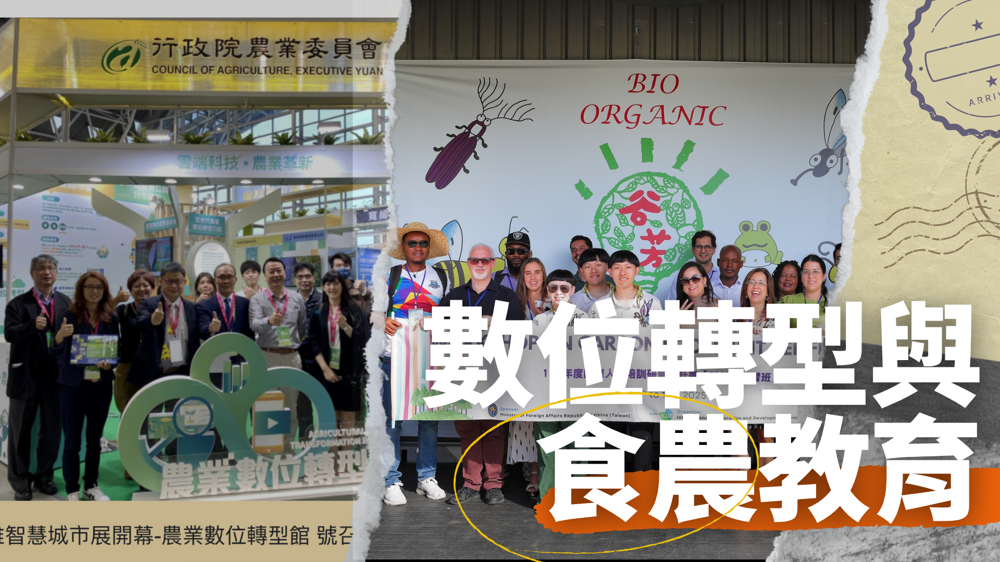

碩士論文
誰的善終？從文化敏感觀點探討台灣臨終醫療法制
採法社會學方法，系統性分析 1998–2024 年善終法制演進，並訪談 12 位跨領域利害關係人

學術計畫
國科會病人自主行為科學研究
運用 Qualtrics 設計實驗問卷，SPSS 分析 4,500 份樣本，探討預立醫療決定影響因子

產業輔導
政府數位轉型與產業輔導專案
執行超過 600 萬元政府標案，輔導農友、商圈店家、餐飲業者進行數位轉型

永續發展
永續淡水行動購
教育部氣候變遷創意實作競賽入圍全國決賽，設計可複製的環保袋循環經營模式

食農教育
農業部食農教育推廣計畫
協助將 ISO 14064-1 碳盤查轉化為永續教育模組，整合農業生產端與消費端敘事